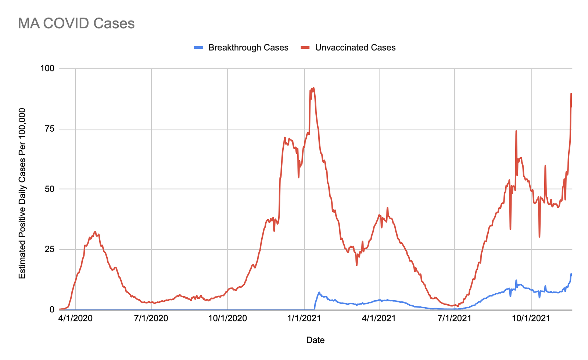

A Better COVID Chart

In most places that report COVID data, we see the daily case rate for cities or states or the country. And what we see are the huge spikes from the initial surges in 2020 and early 2021, followed by a huge drop of cases in the spring into summer when people began getting vaccinated. Then we see a huge spike due to the delta variant and stalled vaccination rates. And this huge spike is very confusing! Is it just unvaccinated people? Is the delta variant causing more breakthrough cases?
Much to my surprise, I hadn't seen a chart or figure that gives any context here! With some digging, I could find one such chart on the CDC website, far from front and center. It's an important chart, because it helps to explain why the vaccines are effective, despite the rise in cases. One thing that is interesting about this chart is that it only represents twenty two states and two cities, all combined. It's so limited in scope because most testing centers do not collect vaccination status.
As a result, places like where I live—citywide, countywide, and statewide—do not have the raw data to publish such a chart. And that's a shame, because this kind of information can help people to understand how important the vaccines are. The charts we see today (the daily cases with a huge spike beginning in the fall) invite a nihilistic despair: "A year and a half of lockdowns and quarantines and social distancing and testing, after vaccines that we had hoped would end the pandemic, what good is it to take any of these precautions if the cases will just spike no matter what?" But taking into account the vaccine status on the daily case charts could tell a very different story.
Since no detailed chart existed, I decided to make my own. I downloaded some raw case data and vaccination rate data reported by the state of Massachusetts, as well as data about the case rate for the vaccinated vs the unvaccinated. The latter data are pretty limited—only twenty two states and two cities report vaccination status along with positive case numbers. So I am doing some extrapolation. But I don't think my assumptions are unrealistic.
I'm assuming that the vaccination rate in the dataset is similar to the vaccination rate in Massachusetts. That dataset has 64% of its population vaccinated, whereas MA has about 70% of the population vaccinated, so it's not too far off. I'm assuming that the vaccinated and unvaccinated are getting tested at roughly the same rate. This seems fair to me, since both groups have incentives to get tested: the vaccinated may be more concerned about the virus and breakthrough cases and will get tested; the unvaccinated require frequent testing for many activities (worksites, restaurants, etc). I'm assuming that variants and surges are hitting all places at the same time. This one isn't likely not true, and I am not sure the effect it will have on the result. Altogether, I don't think these assumptions are horrible, but they're not perfect either.
How I made the chart is relatively straightforward to explain. There are three notable fields. The first is daily cases, which is reported by the state. The second is vaccinate rate, also reported by the state. For both of these, I grabbed the data from Johns Hopkins Center for Civic Impact for the Coronavirus Resource Center GitHub because the formatting was easier to work with. The third notable field is the ratio of case rates for the vaccinated vs the unvaccinated (for the states and cities that report it). These data are reported by the CDC, but I used the ratios presented by the New York Times, adjusted weekly, as simple representation of the data.
For my chart, using the vaccinated vs unvaccinated ratios reported by the CDC / NY Times, I split the daily reported cases for the state of Massachusetts into vaccinated cases and unvaccinated cases. Using population numbers, I calculate the number of daily vaccinates and unvaccinated cases per 100,000 people within each of those two groups. Then I plot it. You can see the raw data and calculations here.
Because of these assumptions and the extrapolations, the information presented in the chart is an estimate. The somewhat-qualitative nature of the numbers is perhaps why we aren't seeing it everywhere. It is not cold, hard data. But since we don't have the cold, hard data which can provide the information we want, these kinds of estimates are our best working models.
Get your booster!
*yes, I know Massachusetts is a commonwealth